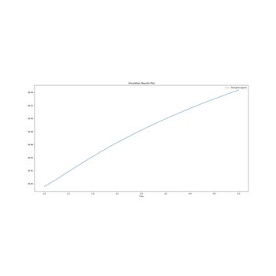
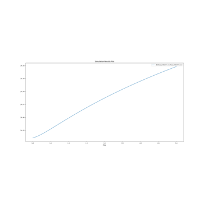
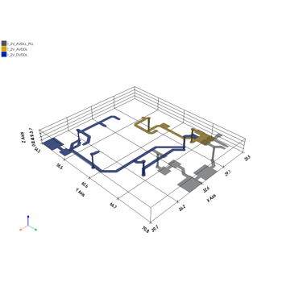
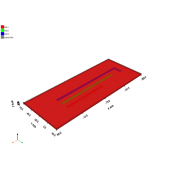
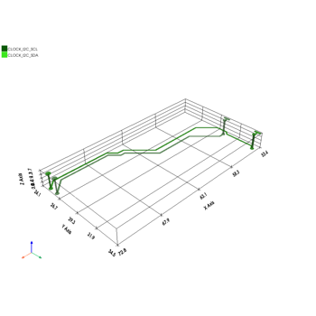

2D Extractor and Q3D Extractor examples#
These examples use PyAEDT to show some end-to-end workflows for 2D Extractor and Q3D Extractor. This includes model generation, setup, and thermal postprocessing.

2D Extractor: CPWG analysis

2D Extractor: stripline analysis
2D Extractor: stripline analysis

Q3D Extractor: PCB DCIR analysis
Q3D Extractor: PCB DCIR analysis

Q3D Extractor: busbar analysis
Q3D Extractor: busbar analysis

Q3D Extractor: PCB analysis